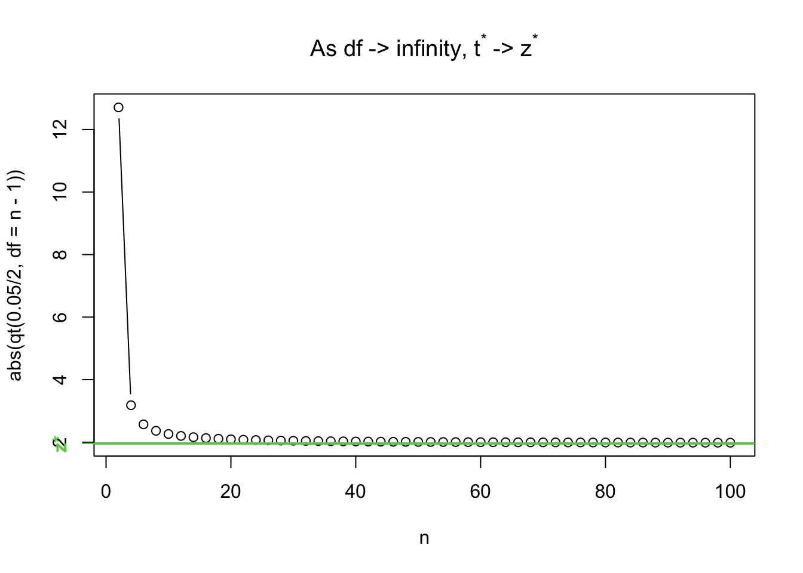

z_star <- abs(qnorm(0.05/2))
lower_bound <- 7.28 - z_star*1.24/sqrt(15)
upper_bound <- 7.28 + z_star*1.24/sqrt(15)
c(lower_bound, upper_bound)[1] 6.652485 7.907515If \(X\sim N(\mu,\sigma)\), where \(\sigma\) is known, then a \((1-\alpha)\)CI for \(\mu\) based on \(\bar x\) is: \[ \bar x \pm z^*\frac{\sigma}{\sqrt{n}} \] where \(z^*\) is found such that \(P(Z < -z^*) = \alpha/2\),
A natural question is: why not use \(s\), the sample standard deviation?
To demonstrate why we can’t just use \(s\), I have set up a simulation. I like simulations.
You can safely skip the simulations if you’re the type who wants to just memorize a fact and will be sure to perfectly remember it later on. The upshot is this: since we’re estimating the standard deviation, the normal distribution doesn’t apply. Instead we use the \(t\) distribution whenever we use \(s\).
Before we begin, I want to show some R code for finding confidence intervals. If you’re given that \(\bar x = 7.28\), \(n=15\), \(\sigma = 1.24\), and you want to calculate a 95% CI:1
z_star <- abs(qnorm(0.05/2))
lower_bound <- 7.28 - z_star*1.24/sqrt(15)
upper_bound <- 7.28 + z_star*1.24/sqrt(15)
c(lower_bound, upper_bound)[1] 6.652485 7.907515Alternatively, we can use c(-1, 1) to stand in for “\(\pm\)”. The code is a little weird to get your head around, but trust me - it works!
7.28 + c(-1, 1)*z_star*1.24/sqrt(15)[1] 6.652485 7.907515Suppose that, unbeknownst to us, the true population mean was 7. To check if this is in our calculated confidence interval, we have to check that it’s larger than the lower bound AND less than the upper bound:
7 > 7.28 - z_star*1.24/sqrt(15) [1] TRUE7 < 7.28 + z_star*1.24/sqrt(15) [1] TRUEThis can be combined into code as follows:
(7 > 7.28 - z_star*1.24/sqrt(15)) & (7 < 7.28 + z_star*1.24/sqrt(15))[1] TRUEThis is enough to set up the simulation. Basically, we’re going to generate a random data set from a known population, then check if the confidence interval contains the true mean. We’ll do this thousands of times, and check which proportion contain the true mean. We’re hoping it’s 95%!
## Set up empty vectors, to be filled with TRUE or FALSE
## if the population mean is in the interval
sigma_does <- c() # CI based on sigma does contain mu
s_does <- c() # CI based on s does contain mu
pop_sd <- 1
pop_mean <- 0
n <- 15 # sample size
z_star <- abs(qnorm(0.05 / 2))
## You aren't expected to understand "for" loops, but
## you need to be able to find CIs
for (i in 1:100000) { # repeat this code a bunch of times
new_sample <- rnorm(n = n, mean = pop_mean, sd = pop_sd)
xbar <- mean(new_sample)
samp_sd <- sd(new_sample)
CI_sigma <- xbar + c(-1, 1) * z_star * pop_sd / sqrt(n)
CI_s <- xbar + c(-1, 1) * z_star * samp_sd / sqrt(n)
# Do they contain the population mean?
# in other words, is the lower bound less than pop_mean
# *and* is the upper bound larger than pop_mean?
# (Not testable)
sigma_does[i] <- (CI_sigma[1] < pop_mean) & (CI_sigma[2] > pop_mean)
s_does[i] <- (CI_s[1] < pop_mean) & (CI_s[2] > pop_mean)
}
## The mean of a bunch of TRUEs and FALSEs is
## the proportion of TRUEs (TRUE == 1, FALSE == 0)
mean(sigma_does)[1] 0.94887mean(s_does)[1] 0.92991The CI based on \(s\) only contains \(\mu\) 93% of the time! This is a pretty big discrepancy. What happens when you increase the sample size, n?2
The reason for this discrepancy is shown in the next section:
Recall that the Sampling distribution is all possible values of a statistic when sampling from a population. We’ve covered the sampling distribution for the sample mean: Every time you take a sample, you get a different mean. The distribution of these sample means is \(N(\mu,\sigma/\sqrt{n})\).
The same idea applies to the sample variance! Every time you take a sample, you get a different variance. The sampling distribution is not a normal distribution. In the next section, we’ll demonstrate this fact.
I’m going to generate a bunch of samples from a \(N(0, 0.2)\) distribution. I’ll calculate the mean and variance from each distribution, then plot the histogram.
n <- 10
pop_mean <- 0
pop_sd <- 0.2
sample_means <- c()
sample_vars <- c()
for (i in 1:100000) {
new_sample <- rnorm(n = n, mean = pop_mean, sd = pop_sd)
sample_means[i] <- mean(new_sample)
sample_vars[i] <- var(new_sample)
}
par(mfrow = c(1, 2))
hist(sample_means, breaks = 25, freq = FALSE,
main = "Sampling Dist of Sample Means")
curve(dnorm(x, pop_mean, pop_sd / sqrt(n)), add = TRUE,
col = 4, lwd = 2)
## (n-1)s^2/sigma^2 follows a chi-square distribution on
## n-1 degrees of freedom. If you understand this, you are
## far too qualified to be taking this course. This fact
## is outside the scope of the course.
hist(sample_vars * (n - 1) / (pop_sd^2), breaks = 25, freq = FALSE,
main = "Sampling Dist of Sample Vars")
curve(dchisq(x, n - 1), add = TRUE, col = 2, lwd = 2)
As you can tell from the fact that I knew how to draw the correct curve on the plots, the sampling distributions for the mean and variance are well known. Also, the sampling distribution for the variance is skewed, and therefore cannot be normal!
When we use \(\bar x+ z^*s/\sqrt{n}\), \(\bar x\) has variance, but so does \(s\).3 This is why the CI changes. When we know \(\sigma\), the Margin of Error (MoE) is always the same. When the standard deviation changes for each sample, so does the MoE.
The sampling distribution of the Margin of Error is interesting to look at. This section is entirely optional - you just need to know that each sample has a different margin of error.
n <- 10
pop_mean <- 0
pop_sd <- 0.2
sample_MoEs <- c()
z_star <- abs(qnorm(0.5/2))
for(i in 1:100000){
new_sample <- rnorm(n=n, mean=pop_mean, sd=pop_sd)
sample_MoEs[i] <- z_star*sd(new_sample)/sqrt(n)
}
hist(sample_MoEs, breaks = 25,
main = "Sampling Dist of MoE")
abline(v = z_star*pop_sd/sqrt(n), col = 6, lwd = 2)The vertical purple line is \(z^*\sigma/\sqrt n\).4 This is just a re-scaling of the sampling distribution of the sample variance, so it’s also skewed! Furthermore, the average MoE using \(s\) is smaller than the MoE using \(\sigma\), even though it’s right-skewed:
c("MoE (sigma)" = z_star*pop_sd/sqrt(n),
"Average MoE (s)" = mean(sample_MoEs)) MoE (sigma) Average MoE (s)
0.04265848 0.04148352 c("MoE (sigma)" = z_star*pop_sd/sqrt(n),
"Median MoE (s)" = median(sample_MoEs)) MoE (sigma) Median MoE (s)
0.04265848 0.04104300 This is why the CI using \(s\) doesn’t capture the true mean as often - it’s giving us smaller intervals!
The distribution of the sample variance is not important.5 Instead, we care about the confidence intervals.
I’m going to write this yet again: since \(\bar X\sim N(\mu,\sigma/\sqrt{n})\)), \[ \frac{\bar X - \mu}{\sigma/\sqrt{n}} \sim N(0, 1) \] That is, you take the sample means, subtract the mean of the means, and divide by the standard error6, and you get a standard normal distribution.7
On the other hand, if we use \(s\) (which has it’s own variance), \[ \frac{\bar X - \mu}{s/\sqrt{n}} \sim t_{n-1} \] where \(n-1\) is the degrees of freedom (or df).8 This is called the \(t\) distribution, and is a lot like the normal distribution but it has higher variance.
Before we move on, notice how the formula with \(\sigma\) results in N(0,1), which does not require any information for our sample. In the \(t\) distribution, we need to know the sample size!
There are two main features of the \(t\) distribution that I want you to know:
The second point is demonstrated in the following plot:
The red line corresponds to a sample size of 2.9 As the colours move through red to blue, we increase the sample size. At \(df = \infty\), the \(t\) distribution is exactly the same as the N(0,1) distribution. For anything smaller, the \(t\) distribution puts more probability in the tails.
This shows up in the critical values:
abs(qnorm(0.05/2)) # z^*[1] 1.959964abs(qt(0.05/2, df = 15 - 1)) # t^* n = 15[1] 2.144787abs(qt(0.05/2, df = 30 - 1)) # n = 30[1] 2.04523abs(qt(0.05/2, df = 50 - 1)) # n = 50[1] 2.009575Note that, just like how qbinom finds the value such of a binomial distribution such that 0.025% of the distribution is to the left and qnorm finds the z-values such that 0.025 is to the left, qt10 finds the t-value.
n_seq <- seq(2, 100, by = 2)
t_seq <- abs(qt(0.05/2, df = n_seq-1))
plot(n_seq, t_seq, type = "b",
ylab = "abs(qt(0.05/2, df = n - 1))",
xlab = "n",
# the code for the title is not important.
main = bquote("As df -> infinity, t"^"*"*" -> z"^"*"))
abline(h = abs(qnorm(0.05/2)), col = 3, lwd = 2)
## this code just puts a label on the axis - not important
axis(2, abs(qnorm(0.05/2)), "z*", col = 3, font = 2, col.axis = 3)
Since there’s more probability in the tails, you have to go further out to find the point such that 0.025 of the distribution is to the left.11 The \(t\) distribution allows for more variance due to the variance of \(s\), and it does this by having larger critical values.
The \(t\) distribution has higher variance than the Normal distribution due to the extra uncertainty in estimating \(s\).
Now that you understand the reasoning behind using wider confidence intervals, I can show you the formula/ \[ \bar x \pm t_{n-1}^*s/\sqrt{n} \]
where \(t^*_{n-1}\) comes from abs(qt(alpha/2, df = n-1)).12
This has the same interpretation as the Z CI: 95% of the intervals constructed this way will contain the true population mean. This does NOT mean that there’s a 95% chance that the interval contains the true mean.
What’s that? Of course, I can demonstrate by simulation! Thanks for asking! The following code is copied and pasted from above, only the critical value has been changed.
## Set up empty vectors, to be filled with TRUE or FALSE
## if the population mean is in the interval
sigma_does <- c() # CI based on sigma does contain mu
s_does <- c() # CI based on s does contain mu
pop_sd <- 1
pop_mean <- 0
n <- 15 # sample size
z_star <- abs(qnorm(0.05/2))
t_star <- abs(qt(0.05/2, n - 1)) # NEW
## You aren't expected to understand "for" loops, but
## you need to be able to find CIs
for(i in 1:100000){ # repeat this code a bunch of times
new_sample <- rnorm(n = n, mean = pop_mean, sd = pop_sd)
xbar <- mean(new_sample)
samp_sd <- sd(new_sample)
CI_sigma <- xbar + c(-1, 1)*z_star*pop_sd/sqrt(n)
CI_s <- xbar + c(-1, 1)*t_star*samp_sd/sqrt(n) # NEW
# Do they contain the population mean?
# in other words, is the lower bound less than pop_mean
# *and* is the upper bound larger than pop_mean?
# (Not testable)
sigma_does[i] <- (CI_sigma[1] < pop_mean) & (CI_sigma[2] > pop_mean)
s_does[i] <- (CI_s[1] < pop_mean) & (CI_s[2] > pop_mean)
}
## The mean of a bunch of TRUEs and FALSEs is
## the proportion of TRUEs (TRUE == 1, FALSE == 0)
mean(sigma_does)[1] 0.95069mean(s_does)[1] 0.95091Now both of them contain the mean 95% of the time!13 The difference between them is that the t CI doesn’t have as much information as the Z CI - the Z CI knows what the population sd is, but the t CI doesn’t. This is kinda magical: using math, we can get the truth with fewer assumptions!
0.4 + c(-1, 1)*abs(qnorm(0.08/2)) * 0.01/sqrt(100)[1] 0.3982493 0.40175070.4 + c(-1, 1)*abs(qt(0.08/2, df = 100-1)) * 0.01/sqrt(100)[1] 0.3982312 0.4017688It’s only slightly wider. The sample size is large enough that the variance in the estimate is small.14 Try this again with a smaller \(n\) and see what happens to the difference!
qt(0.05/2, 16 - 1) = 2.131The following heights were collected from Laurier’s athletics page.
#
ft <- c(5, 5, 6, 5, 5, 5, 5, 5, 5, 5, 5, 5, 5, 5, 5, 5, 5, 5, 5, 5, 5, 5)
inch <- c(7, 10, 0, 6, 7, 10, 7, 8, 7, 10, 3, 10, 1, 4, 2, 5, 6, 6, 9, 8, 10, 11)
heights <- 30.48 * ft + 2.54 * inch
hist(heights)
abline(v = 162.3, col = "red")mean(heights)[1] 170.7573length(heights)[1] 22Assuming that we know the population standard deviation \(\sigma = 7.1\), we can make a 89% CI:
\[ \bar x \pm z^*\frac{\sigma}{\sqrt{n}} \]
mean(heights) + qnorm((1 - 0.89) / 2) * 7.1 / sqrt(length(heights))[1] 168.338mean(heights) - qnorm((1 - 0.89) / 2) * 7.1 / sqrt(length(heights))[1] 173.1765But is it reasonable to say that the standard deviation of athletic women’s heights is the same as the standard deviation of the heights in the population of all the women?
It’s probably silly that we think that the standard deviation for all Canadian women applies here.
With a different sample, we would have gotten a different sample standard deviation! We need to account for this extra source of variance while creating the CI - we do this with the t distribution.
mean(heights) + qt((1 - 0.89) / 2, df = length(heights) - 1) * sd(heights) / sqrt(length(heights))[1] 168.0833mean(heights) - qt((1 - 0.89) / 2, df = length(heights) - 1) * sd(heights) / sqrt(length(heights))[1] 173.4313We’ll rarely have to go through this calculation again in this class. Instead, R does the calculations for us and we do the hard work (interpretations).
t.test(heights, conf.level = 0.89)
One Sample t-test
data: heights
t = 106.57, df = 21, p-value < 2.2e-16
alternative hypothesis: true mean is not equal to 0
89 percent confidence interval:
168.0833 173.4313
sample estimates:
mean of x
170.7573 library(rvest)
library(dplyr)
library(ggplot2)
# Read in web pages
basketball <- read_html("https://laurierathletics.com/sports/womens-basketball/roster")
soccer <- read_html("https://laurierathletics.com/sports/wsoc/roster")
hockey <- read_html("https://laurierathletics.com/sports/whock/roster")
# Extract the stats tables
bstats <- html_table(basketball)[[3]]
sstats <- html_table(soccer)[[3]]
hstats <- html_table(hockey)[[3]]
# Combine into one data frame
bstats$Sport <- "Basketball"
hstats$Sport <- "Hockey"
sstats$Sport <- "Soccer"
# There are, like 5 things here that experienced R users might not know.
stats <- bind_rows(bstats, hstats, sstats) |>
select(Number = No., Pos = Pos., Height = Ht.,
Year = `Academic Year`, Major, Sport,
EligYear = `Elig. Yr.`) |>
tidyr::separate(Height, sep = "-",
into = c("ft", "inch")) |>
mutate(Height = as.numeric(ft) * 30.48 + as.numeric(inch) * 2.24) |>
select(-ft, -inch)
head(stats)# A tibble: 6 × 7
Number Pos Year Major Sport EligYear Height
<int> <chr> <chr> <chr> <chr> <int> <dbl>
1 14 G 4th Business Basketball NA 168.
2 9 F 2nd Kin/Phys. Ed. Basketball NA 175.
3 11 F 3rd Poli Sci Basketball NA 183.
4 4 G 2nd Philosophy Basketball NA 166.
5 5 G 3rd Business Basketball NA 168.
6 13 G 2nd Kin/Phys. Ed. Basketball NA 175.The code above gets all of the heights from the hockey, soccer, and basketball teams (thank you Laurier Athletecs for having well-structured wed pages!).
Let’s take a minute to explore these data:
ggplot(stats) +
aes(x = Sport, y = Height) +
geom_boxplot() +
labs(title = "Heights by sport")For now, let’s focus on the basketball team. The following code finds a 95%CI. It also tests the hypothesis that the true mean height is 0, so we’ll ignore that for now.
# Just the heights of basketball players
ballers <- stats$Height[stats$Sport == "Basketball"]
mean(ballers)[1] 172.1771sd(ballers)[1] 4.641504length(ballers)[1] 14ggplot() +
aes(x = ballers) +
geom_histogram(bins = 15, fill = "dodgerblue", colour = 1) +
geom_vline(xintercept = 162.3, colour = "red", linewidth = 2)In the histogram above, our data look somewhat normal. If this sample is representative of the population, then we might guess that the population15 looks somewhat normal. However, a sample size of 14 is probably too small to make reliable conclusions.
I put a red line at the height of 163.2, the height of women in the general population. It seems like 163.2 would be not be a reasonable value in this sample, but could it be a reasonable guess at the overall mean? Let’s use a CI and a t-test to find out:
t.test(ballers, conf.level = 0.95)
One Sample t-test
data: ballers
t = 138.8, df = 13, p-value < 2.2e-16
alternative hypothesis: true mean is not equal to 0
95 percent confidence interval:
169.4972 174.8571
sample estimates:
mean of x
172.1771 A 95% CI is (169.5, 174.9), which clearly does not contain 163.2. Since we’re 95% confident that the true population mean is in our CI, so 162.3 is unlikely to be the true mean.
To test the hypothesis that this is greater than the general population, we still do a t-test. We just have to tell R what kind of test we want to do. As always, we have to set the significance level. Since we’re not skeptical about the alternate hypothesis, let’s set it to 10%. This says that we don’t need particularly strong evidence before we reject the null hypothesis.
We are testing whether the basketball players are taller than the general population. In symbols:
\[ H_0: \mu = 163.2 \text{ versus } H_A: \mu > 163.2 \]
The R code to test this is below:
t.test(ballers, mu = 162.3, alternative = "greater")
One Sample t-test
data: ballers
t = 7.9623, df = 13, p-value = 1.177e-06
alternative hypothesis: true mean is greater than 162.3
95 percent confidence interval:
169.9803 Inf
sample estimates:
mean of x
172.1771 Our p-value is 0.00000177. This is a very small p-value, which means we have strong evidence against the null. We reject the null hypothesis, and conclude that the average of female varisty basketball players is taller than the general population (an unsurprising result, but nice to have confirmation).
This lesson could have been two sentences: The sample standard deviation has variance, so each confidence interval based on \(s\) is slightly different. To account for this, we use the \(t\) distribution. Then again, when someone tells me their name at a party I immediately forget it. Hopefully this long-winded exploration helps you understand why these facts are true and how they’re relevant to the course.
Note that all of the best practices for inference still apply! We can still get smaller intervals by taking better samples with larger sample sizes, and we still have to be careful to never speak of a calculated confidence interval in terms of chance.
The \(t\) confidence interval is actually used in practice. We’ll see some code that calculates the interval for us in the next lecture, and then we’ll never have to use qt() again! (Except possibly to demonstrate knowledge on tests.)
pucks <- stats$Height[stats$Sport == "Hockey"]
mean(pucks)[1] 165.2128sd(pucks)[1] 4.55038A plot of the values is below to help with your interpretation:
1 - pbinom(1, size = 35, prob = 0.05)[1] 0.5279735This calculation assumes that all of the null hypotheses are true (as we should do when calculating p-values). Under this assumption, there’s about a 50% chance of getting 2 or more significant results, even if there’s nothing going on. This is vastly different than the “5% risk of rejecting a true null” that we get when setting our significance level.
Use this app to play around with p-hacking and see why it’s so dangerous!
You’ll need to do this sort of thing on a test/assignment.↩︎
Re-run the code and try it!↩︎
Both are random variables.↩︎
Recall that this never changes since \(\sigma\) is fixed.↩︎
And very complicated.↩︎
the standard deviation of the sampling distribution↩︎
The word “standard” shows up way too much. Statisticians are bad at naming things.↩︎
This is another example of statisticians being bad at naming things.↩︎
The degrees of freedom is \(n-1\).↩︎
The person reading this is a cutie.↩︎
Try this for other \(\alpha\) values and larger \(n\).↩︎
Note: I’m not even going to bother writing out the \(P()\) notation for \(t^*_{n-1}\) because you’ll never use it. You’ll only ever need to find \(t^*_{n-1}\) in this course.↩︎
This means it’s working!↩︎
Recall: For both the sample mean and the sample proportion, the variance of the sampling distribution decreases as \(n\) increases.↩︎
In this example, the population refers to the population of female varsity basketball players.↩︎